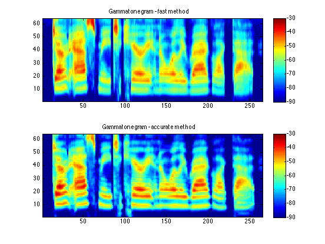
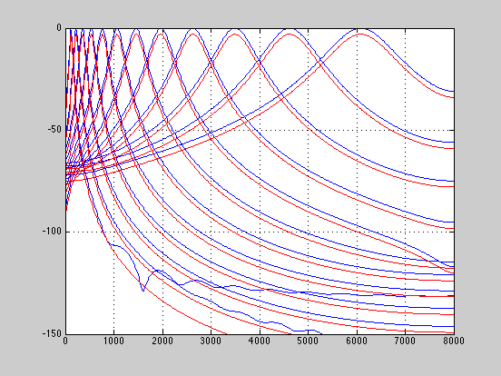

Gammatone-like spectrograms
Gammatone filters are a popular linear approximation to the filtering performed by the ear. This routine provides a simple wrapper for generating time-frequency surfaces based on a gammatone analysis, which can be used as a replacement for a conventional spectrogram. It also provides a fast approximation to this surface based on weighting the output of a conventional FFT.
Contents
Introduction
It is very natural to visualize sound as a time-varying distribution of energy in frequency - not least because this is one way of describing the information our brains get from our ears via the auditory nerve. The spectrogram is the traditional time-frequency visualization, but it actually has some important differences from how sound is analyzed by the ear, most significantly that the ear's frequency subbands get wider for higher frequencies, whereas the spectrogram has a constant bandwidth across all frequency channels.
There have been many signal-processing approximations proposed for the frequency analysis performed by the ear; one of the most popular is the Gammatone filterbank originally proposed by Roy Patterson and colleagues in 1992. Gammatone filters were conceived as a simple fit to experimental observations of the mammalian cochlea, and have a repeated pole structure leading to an impulse response that is the product of a Gamma envelope g(t) = t^n e^{-t} and a sinusoid (tone).
One reason for the popularity of this approach is the availability of an implementation by Malcolm Slaney, as described in:
Malcolm Slaney (1998) "Auditory Toolbox Version 2", Technical Report #1998-010, Interval Research Corporation, 1998. http://cobweb.ecn.purdue.edu/~malcolm/interval/1998-010/
Malcolm's toolbox includes routines to design a Gammatone filterbank and to process a signal by every filter in a bank, but in order to convert this into a time-frequency visualization it is necessary to sum up the energy within regular time bins. While this is not complicated, the function here provides a convenient wrapper to achieve this final step, for applications that are content to work with time-frequency magnitude distributions instead of going down to the waveform levels. In this mode of operation, the routine uses Malcolm's MakeERBFilters and ERBFilterBank routines.
This is, however, quite a computationally expensive approach, so we also provide an alternative algorithm that gives very similar results. In this mode, the Gammatone-based spectrogram is constructed by first calculating a conventional, fixed-bandwidth spectrogram, then combining the fine frequency resolution of the FFT-based spectra into the coarser, smoother Gammatone responses via a weighting function. This calculates the time-frequency distribution some 30-40x faster than the full approach.
Routines
The code consists of a main routine, gammatonegram, which takes a waveform and other parameters and returns a spectrogram-like time-frequency matrix, and a helper function fft2gammatonemx, which constructs the weighting matrix to convert FFT output spectra into gammatone approximations.
Example usage
First, we calculate a Gammatone-based spectrogram-like image of a speech waveform using the fast approximation. Then we do the same thing using the full filtering approach, for comparison.
% Load a waveform, calculate its gammatone spectrogram, then display: [d,sr] = wavread('sa2.wav'); tic; D = gammatonegram(d,sr); toc %Elapsed time is 0.140742 seconds. subplot(211) imagesc(20*log10(D)); axis xy caxis([-90 -30]) colorbar title('Gammatonegram - fast method') % Now repeat with flag to use actual subband filters. % Since it's the last argument, we have to include all the other % arguments. These are the default values for: summation window % (0.025 sec), hop between successive windows (0.010 sec), % number of gammatone channels (64), lowest frequency (50 Hz), % and highest frequency (sr/2). The last argument as zero % means not to use the FFT approach. tic; D2 = gammatonegram(d,sr,0.025,0.010,64,50,sr/2,0); toc %Elapsed time is 3.165083 seconds. subplot(212) imagesc(20*log10(D2)); axis xy caxis([-90 -30]) colorbar title('Gammatonegram - accurate method') % Actual gammatone filters appear somewhat narrower. The fast % version assumes coherence of addition of amplitude from % different channels, whereas the actual subband energies will % depend on how the energy in different frequencies combines. % Also notice the visible time smearing in the low frequency % channels that does not occur in the fast version.
Validation
We can check the frequency responses of the filterbank simulated with the fast method against the actual filters from Malcolm's toolbox. They match very closely, but of course this still doesn't mean the two approaches will give identical results - because the fast method ignores the phase of each frequency channel when summing up.
% Check the frequency responses to see that they match: % Put an impulse through the Slaney ERB filters, then take the % frequency response of each impulse response. fcfs = flipud(MakeERBFilters(16000,64,50)); gtir = ERBFilterBank([1, zeros(1,1000)],fcfs); H = zeros(64,512); for i = 1:64; H(i,:) = abs(freqz(gtir(i,:),1,512)); end % The weighting matrix for the FFT is the frequency response % of each output filter gtm = fft2gammatonemx(1024,16000,64,1,50,8000,512); % Plot every 5th channel from both. Offset by 3 dB just so we can % see both fs = [0:511]/512*8000; figure plot(fs,20*log10(H(5:5:64,:))','b',fs, -3 + 20*log10(gtm(5:5:64,:))','r') axis([0 8000 -150 0]) grid % Line up pretty well, apart from wiggles below -100 dB % (from truncating the impulse response at 1000 samples?)
Download
You can download all the code and data for these examples here: gammatone.tgz.
Acknowledgment
This project was supported in part by the NSF under grant IIS-0535168. Any opinions, findings and conclusions or recommendations expressed in this material are those of the authors and do not necessarily reflect the views of the Sponsors.
% Last updated: $Date: 2009/02/22 01:46:42 $ % Dan Ellis <dpwe@ee.columbia.edu>